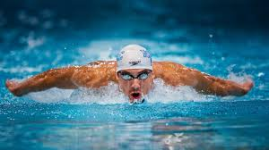

Sports and games are not mere physical activities alone. They play a
more significant role in making people confident, adaptable, alert, and
happy but in most of our schools, the games period is for relaxation. It
is for breaking the humdrum of academic lessons. A sport as a career choice
is still not a lucrative option for many in our country. We perform poorly
in international sports events like the Olympics despite having a demographic
advantage. It is not that we are not capable enough. We lack awareness, and our
players don't get the required encouragement and support.
So, let us now delve into the advantages of sports and games in life:
1.Physical benefits:
Sports and games make you more fit. They make your muscles stronger and
keep the bones, heart, and lungs in good condition. When you play sports
regularly, you use up the fatty molecules. It implies that you have less
chance of blood clotting and heart attack. Physical games are the natural
healer for the obesity menace. At least now, we should make sports a
mandatory part of the curriculum in schools and colleges. Once people enjoy
playing, they may not go for exercise routines to decrease weight. Children
who learn to play sports become active adults.
2. Sports make you a moral human being:
Sports teach many life skills required for good conduct in the society.
When you play sports, you imbibe qualities such as honesty, teamwork,
leadership, and strategic planning. These skills will be helpful in
every walk of life. Children in sports learn to follow the rules and
respect teammates and opponents. As adults, they will not readily resort
to dubious and corrupt practices.

3. Sports help in enhancing your EQ:
Players are not afraid of losing a game. Sportspeople can accept rejections
and defeats better. Similarly, they do not get carried away by their victories.
They understand that success and failure are both part of the game. Life becomes
a lot easier when a similar thought process is applied to all aspects.
4. Sports can boost academics:
Playing games increase concentration power. The more you practice, the higher the
potential of your brain. You become good at decision making. You are ready to take
up challenging subjects. Therefore, sportspeople can study faster and are good at
solving logical and analytical problems. Moreover, sports teach you the value of time.
Students who play sports do not waste their precious time in gossiping and fault-finding.
5. Sports help in healthy socializing:
One of the main problems in the present hyper-connected world is loneliness. Our social
media presence seems dubious, and people have fake friendliness. While playing, people
have a delightful time together and develop a healthy social life too.
6. Sports - an excellent stress-buster:
For students, sports are a source of recreation. They help in breaking the monotony of
academic studies. Serious sports require intense training. Thus, sportspeople have a
proper way to channelize their energy. By actively participating in games, one can
balance his mood well and is likely to experience less stress in life.
7. Sports inculcates adventure spirit:
People who play in national teams, often travel abroad for their games. They get to
experience different cultures and have a broader mind. They become more exploring in
nature. These qualities can make you a global citizen. With more people in sports, our
communities are more open to experiments. From a business point of view, it makes the
country more attractive to foreign investors.
8. Pride of the nation:
At the highest levels, games are held among various countries. It represents the progress
of the nation. When a national team wins the World cup in sports like football or cricket,
the entire country is in a celebration mood. People forget their regional differences and unite
as citizens of the country.
The Government’s role:
Unfortunately, sporting events and organizations are marred with rampant corruption in our country.
The politicians and administrative officials need to understand the national significance of sports.
The present government launched the Khelo India scheme last year. Under this program, many sporting
events are conducted across the nation. It encourages mass participation of students in the games.
The primary purpose of the scheme is to identify talented people and train them adequately. We also
require the sportspeople to have other sources of income as they retire.
With so many advantages and impacts, it is high time that we realize the importance of sports and games.
We need to make sports mandatory in schools. We should give up the attitude of looking at games period as
a break from studies. Students should have both supervised and unsupervised games classes. It is for creating
a natural inclination towards games while supervised courses can help us identify the right talent and groom
them early.